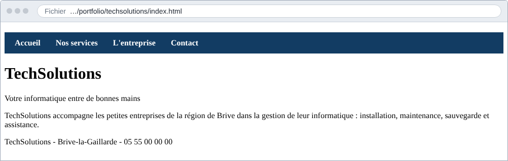
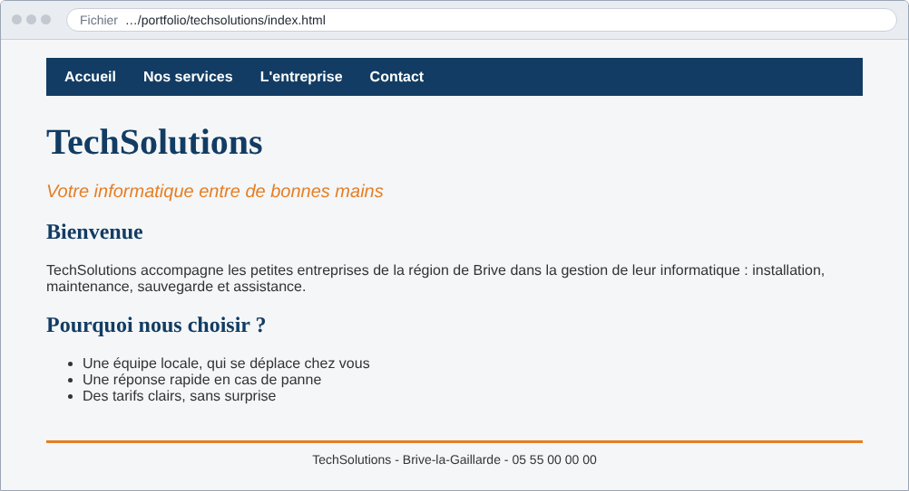
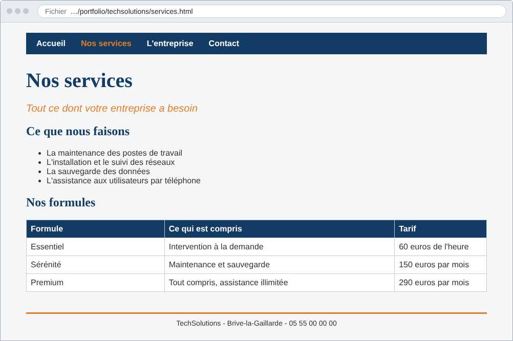

La demande du client
Martin Durand, responsable informatique de TechSolutions, t'a écrit :
« Nous n'avons pas de site internet et nos clients nous le reprochent. Il nous faut un site simple qui présente l'entreprise, nos services et nos tarifs, notre équipe, et qui donne nos coordonnées et nos horaires. Plus tard, nous voudrons y ajouter un espace réservé à nos salariés, mais pour l'instant, une vitrine suffit. Nos couleurs sont le bleu et l'orange. »
La conception a été faite ensemble en cours : l'arborescence (quatre pages) et le contenu de chaque page (partie 2 du cours). Garde-la sous les yeux.
Comment avancer
Niveau 1 l'essentiel, pour tout le monde : le squelette des quatre pages et le menu.
Niveau 2 les vrais textes et la charte graphique du client.
Niveau 3 les défis, si tu as fini.
Le cours de la séance et les mémos HTML et CSS sont autorisés. Enregistre (Ctrl+S) et recharge la page dans le navigateur (F5) après chaque modification.
Niveau 1 Le squelette et le menu
Étape 1. Créer les dossiers et les fichiers
- Ouvre ton dossier
portfoliodans VS Code (Fichier, Ouvrir le dossier). - Dans
portfolio, crée le dossiertechsolutions. Dedans, crée les dossierscssetimages. - Crée le fichier
techsolutions/index.htmlet le fichiertechsolutions/css/style.css.
portfolio/
├── index.html ton portfolio, on n'y touche pas
└── techsolutions/
├── index.html
├── css/
│ └── style.css
└── images/Attention
Il y a maintenant deux fichiers index.html : celui de ton portfolio et celui de TechSolutions. Regarde bien dans quel dossier tu travailles (le chemin s'affiche en haut de l'onglet de VS Code).
Étape 2. La page d'accueil
Dans techsolutions/index.html, écris :
- le squelette complet d'une page (titre de l'onglet :
TechSolutions : accueil), avec dans leheadle lien vers la feuille de stylecss/style.css; - au début du
body, le menu de la partie 4.1 du cours, avec ses quatre liens ; - sous le menu, le titre
h1« TechSolutions » ; - un paragraphe avec la classe
slogan: « Votre informatique entre de bonnes mains » ; - un paragraphe de présentation (le texte est dans l'annexe, à la fin du TP) ;
- pour finir, un paragraphe avec l'identifiant
pied: « TechSolutions - Brive-la-Gaillarde - 05 55 00 00 00 ».
Ouvre la page dans le navigateur : tu dois voir le menu sous forme de liste à puces, puis le titre et les paragraphes.
Étape 3. Le menu horizontal
Dans css/style.css, écris la partie « Le menu » du cours (parties 4.2 et 4.3) : la règle .menu, la règle nav et la règle .lien-menu. Recharge la page.

Étape 4. Les trois autres pages
- Avec
index.htmlouvert, fais Fichier, Enregistrer sous et enregistre une copie sous le nomservices.html, dans le dossiertechsolutions. - Dans
services.html, change le titre de l'onglet (TechSolutions : nos services), leh1(« Nos services »), le slogan, et remplace le paragraphe de présentation par un paragraphe provisoire : « Page en construction ». - Fais de même pour
entreprise.htmletcontact.html(les titres sont dans le tableau de la partie 2.2 du cours). - Ne touche pas au menu ni au paragraphe
pied: ils doivent être identiques sur les quatre pages.
Vérification : le tour du site
Ouvre index.html dans le navigateur, puis clique sur chaque lien du menu, depuis chaque page : 4 pages × 4 liens = 16 clics. À chaque clic, le bon titre doit s'afficher et le menu ne doit pas bouger. Si un lien mène à une erreur, compare lettre par lettre le href et le nom du fichier.
Étape 5. Enregistrer et mettre en ligne
git add .
git commit -m "TechSolutions : squelette du site vitrine et menu"
git pushAttends une à deux minutes, puis ouvre https://ton-pseudo.github.io/techsolutions/ et refais le tour du site en ligne.
Niveau 2 Les vrais textes et la charte graphique
Étape 6. Le contenu des pages
Remplace les paragraphes « Page en construction » par les textes du client (annexe). Choisis toi-même les balises : titres h2, paragraphes, liste à puces ou liste numérotée, tableau. Deux indices :
- les formules et les horaires se présentent bien en tableau, avec une ligne d'en-tête en
th; - pour chaque liste, demande-toi si l'ordre a un sens :
olouul?
Étape 7. La charte graphique
Complète css/style.css pour respecter la charte du client. Écris toi-même les règles (le mémo CSS t'aide) :
| Élément | Ce que veut le client |
|---|---|
La page (body) | texte en Arial (secours sans-serif) et en #333333 ; fond #f4f6f8 ; largeur maximale 900 px, centrée |
Les titres h1 et h2 | Georgia (secours serif), en bleu #123c63 |
Le slogan (classe slogan) | en italique, en orange #e67e22, 20 px |
| Les tableaux | traits simples gris clair, fond des cellules blanc ; cellules d'en-tête en bleu avec le texte en blanc |
Le bas de page (identifiant pied) | centré, 14 px, un trait orange de 3 px au-dessus, 40 px d'espace avant |

Enregistre ton travail sur GitHub : git commit -m "TechSolutions : textes et charte graphique", puis git push.
Niveau 3 Les défis
Défi 1. Où suis-je ?
Sur chaque page, le lien de la page affichée doit apparaître en orange dans le menu. Sur services.html, c'est « Nos services » qui est orange ; sur contact.html, c'est « Contact »...
Indices : un élément peut avoir deux classes, séparées par un espace ; et quand deux règles aussi précises se contredisent, c'est la dernière écrite qui gagne (mémo CSS, partie 5). Ajoute la classe actif au bon lien de chaque page.

Défi 2. Une cinquième page
TechSolutions veut une page « Nos réalisations » (realisations.html) qui présente trois clients fictifs pour lesquels l'entreprise a travaillé. Crée la page et ajoute-la au menu. Combien de fichiers as-tu dû modifier ? Note la réponse en commentaire HTML dans realisations.html.
Avant de partir
- Les quatre pages existent, dans le dossier
techsolutions, avec des noms en minuscules. - Le menu est identique sur les quatre pages et les 16 liens fonctionnent.
- Aucun attribut
styledans le HTML : toute la mise en forme est danscss/style.css. - J'ai fait au moins un commit avec un message clair, et j'ai vérifié le site en ligne.
Annexe : les textes du client
Recopie ces textes dans tes pages. Les titres en gras sont des propositions de titres h2.
Accueil
Bienvenue
TechSolutions accompagne les petites entreprises de la région de Brive dans la gestion de leur informatique : installation, maintenance, sauvegarde et assistance.
Pourquoi nous choisir ?
Une équipe locale, qui se déplace chez vous. Une réponse rapide en cas de panne. Des tarifs clairs, sans surprise.
Nos services
Slogan : Tout ce dont votre entreprise a besoin
Ce que nous faisons
La maintenance des postes de travail. L'installation et le suivi des réseaux. La sauvegarde des données. L'assistance aux utilisateurs par téléphone.
Nos formules
| Formule | Ce qui est compris | Tarif |
|---|---|---|
| Essentiel | Intervention à la demande | 60 euros de l'heure |
| Sérénité | Maintenance et sauvegarde | 150 euros par mois |
| Premium | Tout compris, assistance illimitée | 290 euros par mois |
L'entreprise
Slogan : Une équipe à votre service depuis 2012
Notre histoire
TechSolutions a été créée à Brive-la-Gaillarde par deux techniciens. Aujourd'hui, l'entreprise compte une trentaine de salariés et s'occupe de plus de cent clients.
Notre équipe
Martin Durand, responsable informatique. Julie Moreau, accueil et planning. Karim Benali, comptabilité.
Contact
Slogan : Une question ? Appelez-nous
Nos coordonnées
Téléphone : 05 55 00 00 00
Adresse : zone d'activités, 19100 Brive-la-Gaillarde
Nos horaires
| Jours | Horaires |
|---|---|
| Du lundi au vendredi | 8 h 30 - 18 h |
| Samedi | 9 h - 12 h |